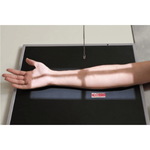
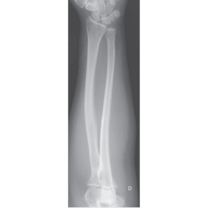
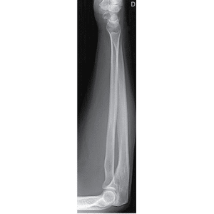

ANTEBRAÇO - AP
Paciente
Sentado próximo à extremidade da mesa, cotovelo
estendido em supinação, centralizar o antebraço sobre a metade do chassi.
Chassis / Filme
24×30 / 30×40 na longitudinal.
Raio central
⊥ orientado para a diáfise do antebraço.
DFF
1,00 m – sem bucky.


ANTEBRAÇO - PERFIL
Paciente
Sentado próximo à extremidade da mesa, cotovelo fletido à 90º mão em perfil, centralizar o antebraço sobre a metade do chassi.
Chassis / Filme
24×30 / 30×40 na longitudinal.
Raio central
⊥ orientado para a diáfise do antebraço.
DFF
1,00 m – sem bucky.
